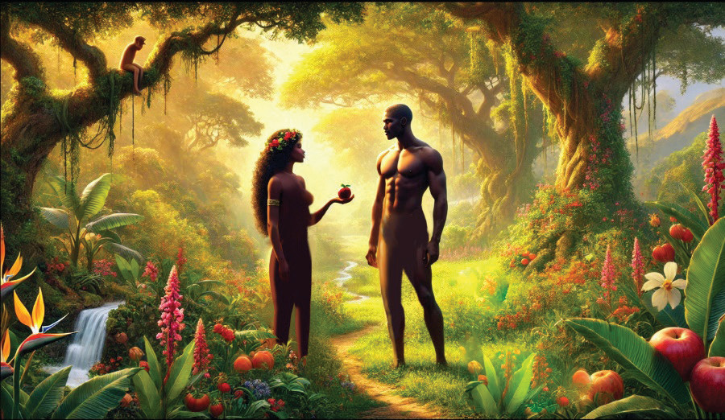

the forbidden tree of the knowledge of good and evil, Adam and Eve were expelled from the Garden of Eden and cursed in various ways. Consequently, God punished the serpent, Eve, and Adam. Nonetheless, God provided the first clothes for Adam and Eve. The chapter shows the origin of sin and evil in the world.
Obedience is very important in human life, God wants His people to obey His will and to have faith in Him alone. God made everything good. However, man destroyed the order by following his passions and interests. Mankind did not keep trust in God this led them into sin. Man and woman blamed one another; did not accept responsibility for their sinful act. The teaching of the fall of man is also called ‘Original sin.’
The fall of man came about when Eve ate fruits from the forbidden tree and shared it with a man. However, there were a number of things that attracted the woman to eat fruit from the forbidden tree. The tree was attractive to the sight and it was desired to make one wise (Genesis 3:7). Figure 3.1 depicts Eve giving Adam a fruit from a forbidden tree.

Consequences of the fall of man
Disobedience of man to God’s command led to a number of outcomes. First, when both ate the fruit from the forbidden tree; their eyes were opened and realised that they were naked. This indicates loss of innocence and integrity. They sew fig leaves and made for themselves loincloths, and dressed themselves. Eventually, they hid themselves from the sight of God which indicates loss of good relationship with God. In addition, the fall of the first man brought about evil in the world, disharmony in the universe and wounded humanity.
The sin of disobedience of the first man brought punishment to the serpent, man and woman and to the whole universe. The serpent (Genesis 3:14-15) was cursed above